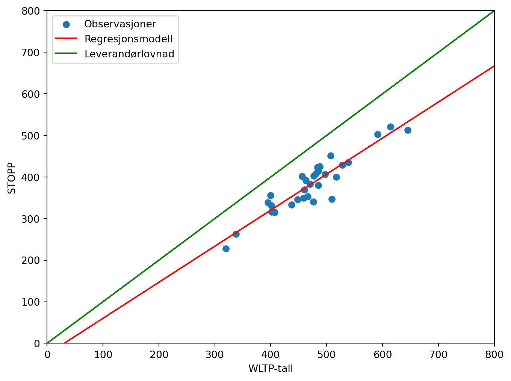

| WLTP-tall | STOPP | |
|---|---|---|
| Modell | ||
| Tesla Model 3 LR Dual motor | 614 | 521 |
| Mercedes-Benz EQS 580 4matic | 645 | 513 |
| BMW iX xDrive50 | 591 | 503 |
| Tesla Model Y LR Dual motor | 507 | 451 |
| Volkswagen ID.3 PRO S | 539 | 435 |
| Kia EV6 2WD | 528 | 429 |
| NIO ES8 LR 7-seter | 488 | 425 |
| Kia EV6 4WD | 484 | 423 |
| Volkswagen ID.4 Pro | 485 | 414 |
| Hyundai Ioniq 5 2WD | 481 | 408 |
| BMW i4 M50 | 497 | 406 |
| Skoda Enyaq iV80X | 477 | 403 |
| Porsche Taycan 4 Cross Turismo | 456 | 402 |
| Polestar 2 LR Single motor | 517 | 400 |
| Audi e-tron GT | 463 | 392 |
| Xpeng P7 | 470 | 383 |
| Audi e-tron Q4 40 | 485 | 380 |
| Hyundai Ioniq 5 4WD (19-tommer) | 460 | 369 |
| BYD Tang | 400 | 356 |
| Volkswagen ID.4 GTX | 466 | 353 |
| Audi e-tron Q4 50 quattro | 459 | 349 |
| Skoda Enyaq iV80 | 509 | 347 |
| Tesla Model 3 SR | 448 | 346 |
| Polestar 2 LR Dual motor | 476 | 340 |
| Cupra Born | 395 | 339 |
| Volvo C40 Recharge | 437 | 333 |
| Mercedes-Benz EQA 250 | 401 | 331 |
| BMW iX xDrive40 | 402 | 316 |
| Mercedes-Benz EQB 350 4matic | 407 | 315 |
| Opel Mokka-e | 338 | 263 |
| Peugeot e-2008 | 320 | 228 |
Arbeidskrav 5
Task 1 - Scrape and fix dataframe
Task 2 - Plot of the data
